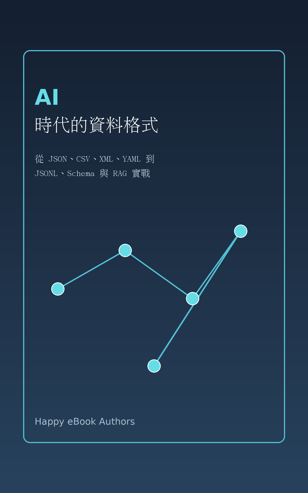

電子書
AI 時代的資料格式
從 JSON、CSV、XML、YAML 到 JSONL、Schema 與 RAG 實戰

AI 時代的資料格式
從 JSON、CSV、XML、YAML 到 JSONL、Schema 與 RAG 實戰
你每天都在接觸資料格式：試算表中的 CSV、API 回傳的 JSON、企業系統裡的 XML、工具設定使用的 YAML 與 TOML，以及供 AI 處理的 JSONL、Schema 與 Markdown 文件。 真正困難的，從來不只是記住每種格式的語法，而是理解： - 如何讓人、程式與 AI 對同一份資料有一致理解？